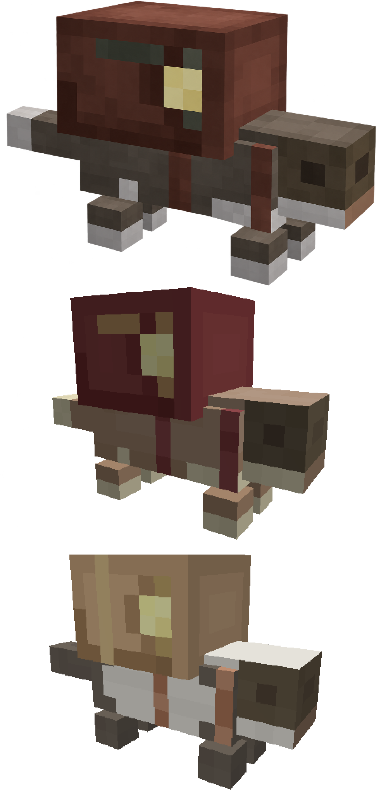
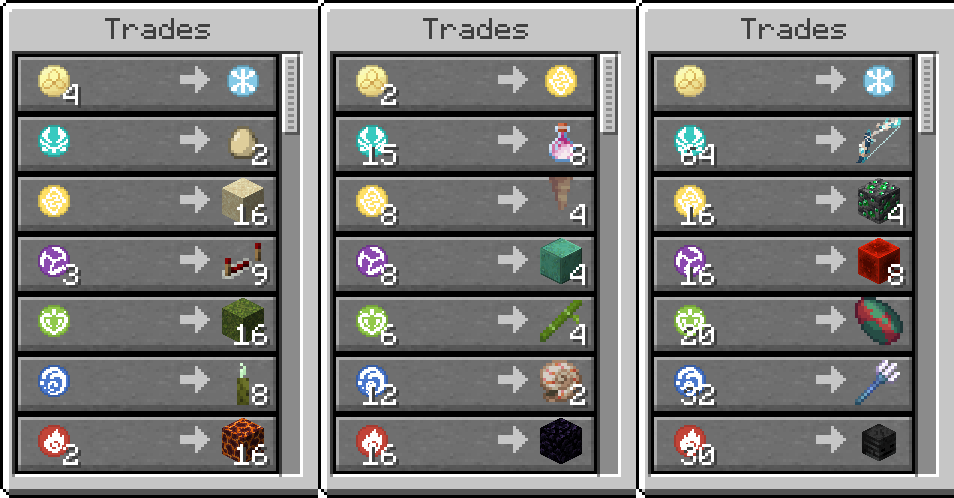

GILE DOCUMENTATION
Getting Started
Your ultimate guide to surviving your first days, gathering Primogems, and uncovering the secrets of the GILE mod.
Recommended size: 800x400px. Showcases early-game survival alongside mod features.
1. Step One: Basic Survival & Iron Gear
Before diving deep into the expansion's mechanics, treat GILE like standard vanilla survival. Get yourself a secure house, a steady food supply, and basic iron-tier gear.
Why iron? Because the core resource of the entire mod requires at least an iron pickaxe (or better) to mine effectively.
2. Finding Primogem Ore
Once your basic setup is ready, keep an eye out for the mod's primary resource: Primogem Ore. It comes in three natural variants across your world:
- Overworld Variant (Standard Primogem Ore)
- Deepslate Variant (Deepslate Primogem Ore)
- End Variant (End Primogem Ore)

Ore Generation Stats:
| Property | Details |
|---|---|
| Vein Size | 12 blocks per vein |
| Frequency | 5 veins per chunk (Pretty common) |
| Drop Rate | Aproximatively 1–3 Primogems per block (without extra enchantments) |
| Required Tool | Iron Pickaxe tier or higher |
The moment you pick up your first Primogems, almost half of the mod's recipes will automatically unlock! More importantly, you gain access to crafting Sigils and exploring the Wish Mechanics, as well as unlocking the Pearlescent material building set.
Pearlescent Block Set
Pearlescent Blocks to be used for decorations.

3. Weasel Thieves & Currency
As you explore the overworld, you'll frequently encounter Weasel Thieves. These sneaky little creatures run away from players while making a very noticeable coin sound, so you'll need to catch them quickly!

Weasel Thief
Creature · Peacefull · Overworld / The End 10 HP
10 HP
Spawns rarely anywhere in the Overworld or in The End Outer Islands - The Moon. Can spawn on any natural block in any biome except The Nether & The Main End Island. Have 60% chance to be Amateur (Default), 30% chance Hoarder (Rare) and 10% chance Golden (Legendary).
Flee from players within 16 blocks, runs at 1.2x speed near, 1.5x speed far. Drops Mora randomly on fleeing. If catched, can be traded with. Regardless of its small size, makes a very distint coin sound, so pretty easy to find.
Trades value depends on Weasel's Variant. The rarer the variant, the cooler trades are. Amateur trades something easy to find, but useful for SkyBlock or OneBlock playthroughs. Hoarder offers much more valuable items. Those can be useful even in an ordinary Survival. While Golden can trade some enchanted tools, elytras and even the Elemental Weapons.
 1-12
1-12
🦦 Weasel Thief Merchant — Trade Reference
Complete reference for the trades generated by updateTrades(ServerLevel level). Each Weasel receives one trade for each elemental/sigil category, plus the universal Mora Converter.
Weasel Thief Trades Example

maxUses is currently 3 for every variant, and xp is currently 5 for every variant. The variant changes the prices and rewards, but not the usage limit or XP.Detailed description of every possible outcome right below:
💰 Trade 1 — Mora Converter
This trade is always generated first. The player pays Mora and receives one randomly selected Sigil.
| Trade | Variant | Cost | Possible Reward | Quantity | Uses | XP |
|---|---|---|---|---|---|---|
| 1 | AMATEUR | 4 Mora | Random Sigil | 1 | 3 | 5 |
| 1 | HOARDER | 2 Mora | Random Sigil | 1 | 3 | 5 |
| 1 | GOLDEN | 1 Mora | Random Sigil | 1 | 3 | 5 |
🌬️ Trade 2 — Air / Anemo
| Variant | Roll | Cost | Reward | Quantity | Uses | XP |
|---|---|---|---|---|---|---|
| AMATEUR | 0 | 2 Anemo Sigils | Phantom Membrane | 4 | 3 | 5 |
| AMATEUR | 1 | 1 Anemo Sigil | Egg | 2 | 3 | 5 |
| AMATEUR | 2 | 4 Anemo Sigils | Duration III Rocket | 8 | 3 | 5 |
| HOARDER | 0 | 8 Anemo Sigils | Breeze Rod | 2 | 3 | 5 |
| HOARDER | 1 | 15 Anemo Sigils | Dragon Breath | 8 | 3 | 5 |
| HOARDER | 2 | 9 Anemo Sigils | Cobweb | 3 | 3 | 5 |
| GOLDEN | 0 | 30 Anemo Sigils | Heavy Core | 1 | 3 | 5 |
| GOLDEN | 1 | 40 Anemo Sigils | Elytra | 1 | 3 | 5 |
| GOLDEN | 2 | 64 Anemo Sigils | Daybreak Chronicles | 1 | 3 | 5 |
🪨 Trade 3 — Earth / Geo
| Variant | Roll | Cost | Reward | Quantity | Uses | XP |
|---|---|---|---|---|---|---|
| AMATEUR | 0 | 1 Geo Sigil | Sand | 16 | 3 | 5 |
| AMATEUR | 1 | 2 Geo Sigils | Grass Block | 4 | 3 | 5 |
| AMATEUR | 2 | 4 Geo Sigils | Stone | 32 | 3 | 5 |
| HOARDER | 0 | 8 Geo Sigils | Pointed Dripstone | 4 | 3 | 5 |
| HOARDER | 1 | 4 Geo Sigils | Amethyst Cluster | 2 | 3 | 5 |
| HOARDER | 2 | 9 Geo Sigils | Pearlescent Material | 1 | 3 | 5 |
| GOLDEN | 0 | 32 Geo Sigils | Diamond Block | 1 | 3 | 5 |
| GOLDEN | 1 | 16 Geo Sigils | Deepslate Emerald Ore | 4 | 3 | 5 |
| GOLDEN | 2 | 64 Geo Sigils | Vortex Vanquisher | 1 | 3 | 5 |
⚡ Trade 4 — Electro
| Variant | Roll | Cost | Reward | Quantity | Uses | XP |
|---|---|---|---|---|---|---|
| AMATEUR | 0 | 1 Electro Sigil | Redstone | 16 | 3 | 5 |
| AMATEUR | 1 | 3 Electro Sigils | Repeater | 9 | 3 | 5 |
| AMATEUR | 2 | 5 Electro Sigils | Comparator | 6 | 3 | 5 |
| HOARDER | 0 | 4 Electro Sigils | TNT | 2 | 3 | 5 |
| HOARDER | 1 | 6 Electro Sigils | Glowstone | 6 | 3 | 5 |
| HOARDER | 2 | 8 Electro Sigils | Oxidized Copper | 4 | 3 | 5 |
| GOLDEN | 0 | 16 Electro Sigils | Redstone Block | 8 | 3 | 5 |
| GOLDEN | 1 | 32 Electro Sigils | Thunder Trident | 1 | 3 | 5 |
| GOLDEN | 2 | 64 Electro Sigils | Engulfing Lightning | 1 | 3 | 5 |
🌿 Trade 5 — Nature / Dendro
| Variant | Roll | Cost | Reward | Quantity | Uses | XP |
|---|---|---|---|---|---|---|
| AMATEUR | 0 | 1 Dendro Sigil | Moss Block | 16 | 3 | 5 |
| AMATEUR | 1 | 4 Dendro Sigils | Lily Pad | 8 | 3 | 5 |
| AMATEUR | 2 | 3 Dendro Sigils | Spore Blossom | 1 | 3 | 5 |
| HOARDER | 0 | 5 Dendro Sigils | Sugar Cane | 12 | 3 | 5 |
| HOARDER | 1 | 6 Dendro Sigils | Bamboo | 4 | 3 | 5 |
| HOARDER | 2 | 8 Dendro Sigils | Cocoa Beans | 2 | 3 | 5 |
| GOLDEN | 0 | 15 Dendro Sigils | Bee Nest with Bee | 1 | 3 | 5 |
| GOLDEN | 1 | 20 Dendro Sigils | Sniffer Egg | 1 | 3 | 5 |
| GOLDEN | 2 | 64 Dendro Sigils | Thousand Floating Dreams | 1 | 3 | 5 |
💧 Trade 6 — Water / Hydro
| Variant | Roll | Cost | Reward | Quantity | Uses | XP |
|---|---|---|---|---|---|---|
| AMATEUR | 0 | 2 Hydro Sigils | Prismarine Crystals | 5 | 3 | 5 |
| AMATEUR | 1 | 1 Hydro Sigil | Sea Pickle | 8 | 3 | 5 |
| AMATEUR | 2 | 1 Hydro Sigil | Dried Kelp Block | 4 | 3 | 5 |
| HOARDER | 0 | 12 Hydro Sigils | Nautilus Shell | 2 | 3 | 5 |
| HOARDER | 1 | 10 Hydro Sigils | Axolotl Bucket | 1 | 3 | 5 |
| HOARDER | 2 | 8 Hydro Sigils | Sponge | 4 | 3 | 5 |
| GOLDEN | 0 | 25 Hydro Sigils | Heart of the Sea | 1 | 3 | 5 |
| GOLDEN | 1 | 32 Hydro Sigils | Riptide Trident | 1 | 3 | 5 |
| GOLDEN | 2 | 64 Hydro Sigils | Splendor of Tranquil Waters | 1 | 3 | 5 |
🔥 Trade 7 — Fire / Pyro
| Variant | Roll | Cost | Reward | Quantity | Uses | XP |
|---|---|---|---|---|---|---|
| AMATEUR | 0 | 2 Pyro Sigils | Magma Block | 16 | 3 | 5 |
| AMATEUR | 1 | 3 Pyro Sigils | Lava Bucket | 1 | 3 | 5 |
| AMATEUR | 2 | 2 Pyro Sigils | Fire Charge | 8 | 3 | 5 |
| HOARDER | 0 | 16 Pyro Sigils | Obsidian | 1 | 3 | 5 |
| HOARDER | 1 | 8 Pyro Sigils | Blaze Rod | 2 | 3 | 5 |
| HOARDER | 2 | 4 Pyro Sigils | Ghast Tear | 2 | 3 | 5 |
| GOLDEN | 0 | 30 Pyro Sigils | Wither Skeleton Skull | 1 | 3 | 5 |
| GOLDEN | 1 | 25 Pyro Sigils | Netherite Scrap | 1 | 3 | 5 |
| GOLDEN | 2 | 64 Pyro Sigils | Thousand Blazing Suns | 1 | 3 | 5 |
❄️ Trade 8 — Frost / Cryo
| Variant | Roll | Cost | Reward | Quantity | Uses | XP |
|---|---|---|---|---|---|---|
| AMATEUR | 0 | 2 Cryo Sigils | Powder Snow Bucket | 1 | 3 | 5 |
| AMATEUR | 1 | 8 Cryo Sigils | Snow Block | 1 | 3 | 5 |
| AMATEUR | 2 | 1 Cryo Sigil | Ice | 16 | 3 | 5 |
| HOARDER | 0 | 8 Cryo Sigils | Packed Ice | 32 | 3 | 5 |
| HOARDER | 1 | 18 Cryo Sigils | Frost Walker Book | 1 | 3 | 5 |
| HOARDER | 2 | 9 Cryo Sigils | Sculk Sensor | 16 | 3 | 5 |
| GOLDEN | 0 | 20 Cryo Sigils | Blue Ice | 64 | 3 | 5 |
| GOLDEN | 1 | 36 Cryo Sigils | Epic Pickaxe | 1 | 3 | 5 |
| GOLDEN | 2 | 64 Cryo Sigils | Hiemal Mandate | 1 | 3 | 5 |
🌙 Trade 9 — Moon / Luna
| Variant | Roll | Cost | Reward | Quantity | Uses | XP |
|---|---|---|---|---|---|---|
| AMATEUR | 0 | 1 Luna Sigil | End Grass Block | 2 | 3 | 5 |
| AMATEUR | 1 | 1 Luna Sigil | End Stone | 16 | 3 | 5 |
| AMATEUR | 2 | 4 Luna Sigils | Ghostly Sapling | 1 | 3 | 5 |
| HOARDER | 0 | 6 Luna Sigils | Ender Pearl | 4 | 3 | 5 |
| HOARDER | 1 | 8 Luna Sigils | Shulker Shell | 2 | 3 | 5 |
| HOARDER | 2 | 16 Luna Sigils | Heart of Emergency | 1 | 3 | 5 |
| GOLDEN | 0 | 20 Luna Sigils | End Crystal | 2 | 3 | 5 |
| GOLDEN | 1 | 24 Luna Sigils | Warp Clock | 1 | 3 | 5 |
| GOLDEN | 2 | 64 Luna Sigils | Nocturne's Curtain Call | 1 | 3 | 5 |
4. Crafting Sigils
If you are lucky enough early on, you can craft Sigils right away. They are made using Primogems combined with an elemental item (or standard dye if playing in dyeable data pack mode).
You can turn it on by /datapack enable gilemod:lunar_favor_mode , you'll need cheets enabled on the server for that. OFF by default or by using /datapack disable gilemod:lunar_favor_mode
=== Normal Recipe: === _ _ _ _ _ _ _ _ _ _ _ _ _ _ _ _ _ _ === Lunar Favor Mode: === _ _ _ _ _ _ _ _ _ _ _ _ _


5. Next Steps: Progression & Exploration
Once you're geared up and have gathered your initial materials, you have two main paths to push deeper into the mod:
- Path A: Continue normal game progression to naturally reach The End.
- Path B: Venture out to find the Ancient Ruins structure, offering an alternative route to the End dimension.
To help you navigate these hazardous locations, make sure to craft yourself some helpful Tools & Utils beforehand!
Showcasing the transition from Overworld mining to Ancient Ruins / The End.